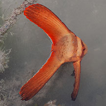
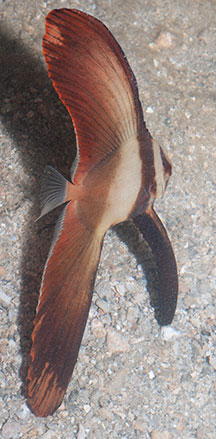
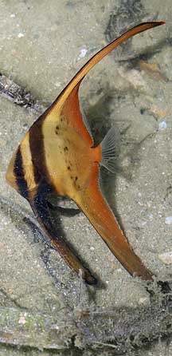
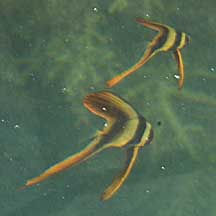
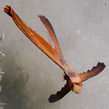
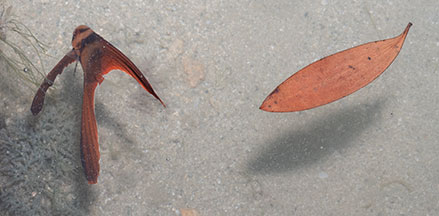
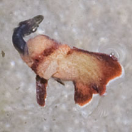
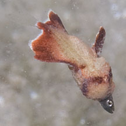
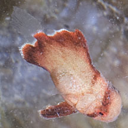

|
|
| fishes text index | photo index |
| Phylum Chordata > Subphylum Vertebrate > fishes |
| Batfishes Family Ephippidae updated Sep 2020 Where seen? The fishes with long fins are sometimes seen, in seagrass meadows, near reefs and at jetties on our Southern shores. What are batfishes? These fishes belong to Family Ephippidae. According to FishBase: the family has 7 genera and 20 species, found in the Atlantic, Indian and Pacific Oceans. Those recorded for Singapore belong to Platax sp. Features: The body is flattened sideways. The mouth is small. Adults are silvery and rather squarish. Hence their other common name of Spadefish. Juveniles may look very different in colour and pattern and have very elongated dorsal and anal fins. Those seen 12-15cm long usually with two dark bars, one through the eye, on an orange body. The species are difficult to distinguish without examination of small body parts. |
 St John's Island, Apr 12 |
 Pulau Semakau, Aug 11 |
 Pulau Semakau, May 07 |
 Marina at Keppel Bay, Oct 09 |
| Make like a leaf: Sometimes, may lie on the side, floating
in the water to mimic leaves or flat against the surface mimicking
toxic flatworms. In some species, the juveniles are found with feather
stars. May be confused with the Silver moony (Family Monodactylidae). |
 St. John's Island, Apr 12 |
 Resembles a floating leaf. Kusu Island, May 16 |
| What do they eat? They feed on seaweeds and small animals. |
|
 Tanah Merah, Aug 11 |
 A tiny Batfish swallowing a fish almost as large as itself! |
 Finished swallowing its prey! |
| Human
uses: Juvenile batfishes are often taken from the wild
for the aquarium trade. Status and threats: None of our batfishes are listed among the threatened animals of Singapore. However, like other creatures of the intertidal zone, they are affected by human activities such as reclamation and pollution. Over-collection by hobbyists can also have an impact on local populations. |
| Batfishes on Singapore shores |
On wildsingapore
flickr
|
| Other sightings on Singapore shores |
| Family
Ephippidae recorded for Singapore from Wee Y.C. and Peter K. L. Ng. 1994. A First Look at Biodiversity in Singapore. +Other additions (Singapore Biodiversity Records, ect)
|
Links
References
|